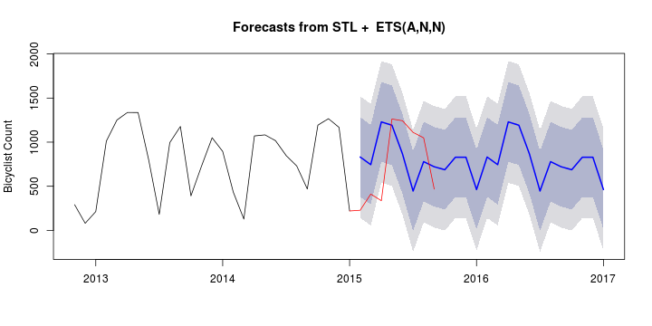

Are bicyclists making full use of Arlington's bike trails?
Brian Frickert
Senior Data Over-Engineer
Are bicyclists making full use of Arlington's bike trails?
library(leaflet)
m <- leaflet()
m <- addTiles(m)
m <- addMarkers(m, lng='38.857702', lat='38.857702', popup='CC Connector')
m
<!--html_preserve-->
<!--/html_preserve--> fcast <- forecast(fit, method="ets")
plot(fcast, ylab="Bicyclist Count")
lines(test, col='red')
